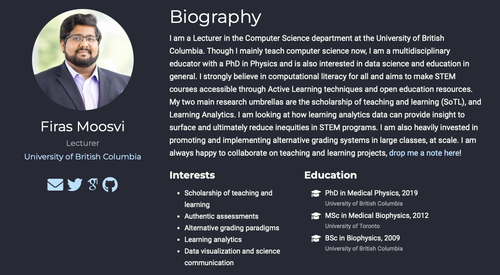
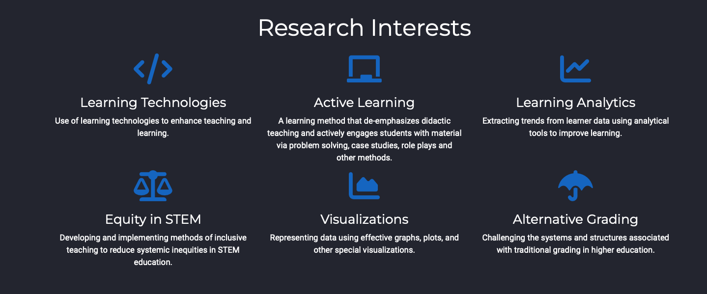
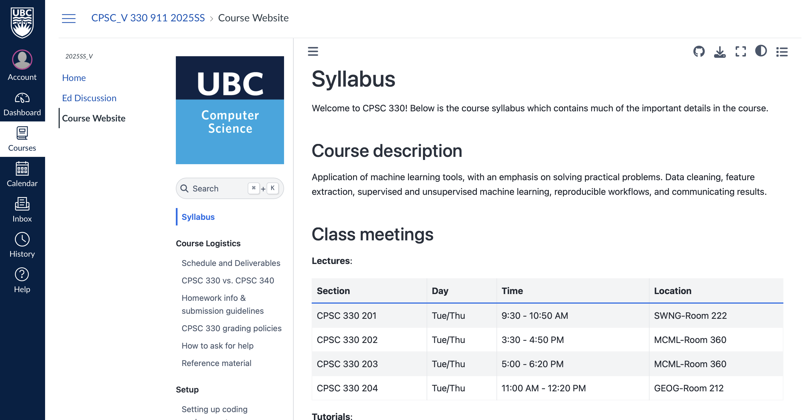
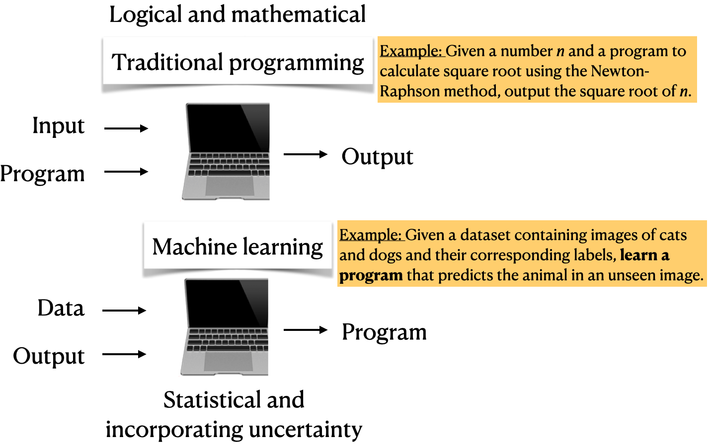

2Lecture 1: Introduction to CPSC 330
Firas Moosvi (Slides adapted from Varada Kolhatkar)
🤝 Introductions ! 🤝
About your instructor
About my research interests
Group work in this class
This term we will try to work in “Pods” of 3-5 …
Research shows that there is tremendous benefits in students working (and struggling) together!
Students ask better and more insightful questions, engage more deeply with the work, and it adds a social element to class.
We will try this in CPSC 330 this term!
Group work in this class
Understandably, not everyone is a fan of group work - I understand that!
So you will never be forced to work in groups If you would like to opt-out, move to the far left and far right sides of the room so we know you prefer to work individually.
If everyone moves to the side of the room, we will re-evaluate this approach 😂
There are no marks or points associated with these groups, and everyone should work on their own laptops as well
Group work: Pods
Form a Pod of 3-5 people sitting close to you.
Each person should answer the following questions:
- Preferred Name,
- Year,
- (intended) Major
- Why are you taking CPSC 330?
Then, as a group, answer the following question:
What is the most interesting (good or bad) example of Machine Learning in society?
Meet Eva (a fictitious persona)!
Eva is among one of you. She has some experience in Python programming. She knows machine learning as a buzz word. During her recent internship, she has developed some interest and curiosity in the field. She wants to learn what is it and how to use it. She is a curious person and usually has a lot of questions!
Learning outcomes
From this lecture, you will be able to
- Explain the motivation behind study machine learning.
- Briefly describe supervised learning.
- Differentiate between traditional programming and machine learning.
- Assess whether a given problem is suitable for a machine learning solution.
- Navigate through the course material.
- Be familiar with the policies and how the class is going to run.
- Become familiar with CPSC 330 and how the course works
About this course
CPSC 330 website
- Course Jupyter book: https://ubc-cs.github.io/cpsc330-2025S1
- Course GitHub repository: https://github.com/UBC-CS/cpsc330-2025S1
Important
Course website: https://ubc-cs.github.io/cpsc330-2025S1 is the most important link. You can access the course website from Canvas.

Please read everything on there!
You can find the source code for everything we do here: https://ubc-cs.github.io/cpsc330-2025S1.
Important
Make sure you go through the syllabus thoroughly and complete the syllabus quiz before Friday’s class!
Asking questions during class
You are welcome to ask questions by raising your hand!
If you would prefer to write notes and ask questions later, you are more than welcome to do that also! Use Piazza.
Registration, waitlist and prerequisites
Important
Please go through this document carefully before contacting your instructors about these issues. Even then, we are very unlikely to be able to help with registration, waitlist or prerequisite issues.
- If you are on waitlist and if you’d like to try your chances, you should be able to access Canvas and Ed Discussion.
- If you’re unable to make it this time, there will be multiple sections of this course offered next semester and then again in the spring.
Lecture format
- In person lectures M,W,F from 10 AM to 1 PM.
- There will be videos to watch before every lecture. You will find the list of pre-watch videos in the schedule on the course webpage.
- We will also try to work on some questions and exercises together during the class.
- All materials will be posted in this GitHub repository.
- You may attend any tutorials or office hours your want, regardless of in which/whether you’re registered.
Home work assignments
- First homework assignment is due Friday May 16th, at 6 PM. This is a relatively straightforward assignment on Python. If you struggle with this assignment then that could be a sign that you will struggle later on in the course.
- You must do the first two homework assignments on your own.
Exams
- We’ll have two self-scheduled midterms over a few day window and one final exam in Computer-based Testing Facility (CBTF).
Course structure
- Part I: Introduction, ML fundamentals, preprocessing, midterm 1
- Part II: Unsupervised learning, transfer learning, common special cases, midterm 1
- Part III: Communication and ethics
- ML skills are not beneficial if you can’t use them responsibly and communicate your results. In this module we’ll talk about these aspects. ## Code of conduct
- Our main forum for getting help will be Ed Discussion.
Important
Please read this entire document about asking for help. TLDR: Be nice.
Homework format: Jupyter lab notebooks
- Our notes are created in a Jupyter notebook, with file extension
.ipynb. - Also, you will complete your homework assignments using Jupyter notebooks.
- Confusingly, “Jupyter notebook” is also the original application that opens
.ipynbfiles - but has since been replaced by Jupyter lab.- I am using Jupyter lab, some things might not work with the Jupyter notebook application.
- You can also open these files in Visual Studio Code.
Jupyter lab notebooks
- Notebooks contain a mix of code, code output, markdown-formatted text (including LaTeX equations), and more.
- When you open a Jupyter notebook in one of these apps, the document is “live”, meaning you can run the code.
For example:
More about Jupyter lab
- By default, Jupyter prints out the result of the last line of code, so you don’t need as many
printstatements. - In addition to the “live” notebooks, Jupyter notebooks can be statically rendered in the web browser, e.g. this.
- This can be convenient for quick read-only access, without needing to launch the Jupyter notebook/lab application.
- But you need to launch the app properly to interact with the notebooks.
Lecture notes
- All the lectures from last year are available here.
- We cannot promise anything will stay the same from last year to this year, so read them in advance at your own risk.
- A “finalized” version will be pushed to GitHub and the Jupyter book right before each class.
- Each instructor will have slightly adapted versions of notes to present slides during lectures.
- You will find the link to these slides in our repository: https://github.com/UBC-CS/cpsc330-2025S1/tree/main/lectures/103-Firas-lectures
Grades
Setting up your computer for the course
Recommended browser and tools
In this course, we will primarily be using Python , git, GitHub, Canvas, Gradescope, Piazza, and PrairieLearn.
Course conda environment
- Follow the setup instructions here to create a course
condaenvironment on your computer. - If you do not have your computer with you, you can partner up with someone and set up your own computer later.
Python requirements/resources
We will primarily use Python in this course.
Here is the basic Python knowledge you’ll need for the course:
- Basic Python programming
- Numpy
- Pandas
- Basic matplotlib
- Sparse matrices
Homework 1 is all about Python.
Note
We do not have time to teach all the Python we need but you can find some useful Python resources here.
CPSC 330 vs. 340
Read https://ubc-cs.github.io/cpsc330-2025S1/docs/330_vs_340.html which explains the difference between two courses.
TLDR:
- 340: how do ML models work?
- 330: how do I use ML models?
- CPSC 340 has many prerequisites.
- CPSC 340 goes deeper but has a more narrow scope.
- I think CPSC 330 will be more useful if you just plan to apply basic ML.
What is Machine Learning (ML)?
Spam prediction
- Suppose you are given some data with labelled spam and non-spam messages
| target | sms |
|---|---|
| spam | LookAtMe!: Thanks for your purchase of a video clip from LookAtMe!, you've been charged 35p. Think you can do better? Why not send a video in a MMSto 32323. |
| ham | Aight, I'll hit you up when I get some cash |
| ham | Don no da:)whats you plan? |
| ham | Going to take your babe out ? |
| ham | No need lar. Jus testing e phone card. Dunno network not gd i thk. Me waiting 4 my sis 2 finish bathing so i can bathe. Dun disturb u liao u cleaning ur room. |
Traditional programming vs. ML
- Imagine writing a Python program for spam identification, i.e., whether a text message or an email is spam or non-spam.
- Traditional programming
- Come up with rules using human understanding of spam messages.
- Time consuming and hard to come up with robust set of rules.
- Machine learning
- Collect large amount of data of spam and non-spam emails and let the machine learning algorithm figure out rules.
Let’s train a model
- There are several packages that help us perform machine learning.
Unseen messages
- Now use the trained model to predict targets of unseen messages:
| sms | |
|---|---|
| 3245 | Funny fact Nobody teaches volcanoes 2 erupt, tsunamis 2 arise, hurricanes 2 sway aroundn no 1 teaches hw 2 choose a wife Natural disasters just happens |
| 944 | I sent my scores to sophas and i had to do secondary application for a few schools. I think if you are thinking of applying, do a research on cost also. Contact joke ogunrinde, her school is one m... |
| 1044 | We know someone who you know that fancies you. Call 09058097218 to find out who. POBox 6, LS15HB 150p |
| 2484 | Only if you promise your getting out as SOON as you can. And you'll text me in the morning to let me know you made it in ok. |
Predicting on unseen data
The model is accurately predicting labels for the unseen text messages above!
| sms | spam_predictions | |
|---|---|---|
| 3245 | Funny fact Nobody teaches volcanoes 2 erupt, tsunamis 2 arise, hurricanes 2 sway aroundn no 1 teaches hw 2 choose a wife Natural disasters just happens | ham |
| 944 | I sent my scores to sophas and i had to do secondary application for a few schools. I think if you are thinking of applying, do a research on cost also. Contact joke ogunrinde, her school is one me the less expensive ones | ham |
| 1044 | We know someone who you know that fancies you. Call 09058097218 to find out who. POBox 6, LS15HB 150p | spam |
| 2484 | Only if you promise your getting out as SOON as you can. And you'll text me in the morning to let me know you made it in ok. | ham |
A different way to solve problems
Machine learning uses computer programs to model data. It can be used to extract hidden patterns, make predictions in new situation, or generate novel content.
A field of study that gives computers the ability to learn without being explicitly programmed.
– Arthur Samuel (1959)
ML vs. traditional programming
- With machine learning, you’re likely to
- Save time
- Customize and scale products

Prevalence of ML
Let’s look at some examples.

Activity: For what type of problems ML is appropriate? (~5 mins)
Discuss with your neighbour for which of the following problems you would use machine learning
- Finding a list of prime numbers up to a limit
- Given an image, automatically identifying and labeling objects in the image
- Finding the distance between two nodes in a graph
Types of machine learning
Here are some typical learning problems.
- Supervised learning (Gmail spam filtering)
- Training a model from input data and its corresponding targets to predict targets for new examples.
- Training a model from input data and its corresponding targets to predict targets for new examples.
- Unsupervised learning (Google News)
- Training a model to find patterns in a dataset, typically an unlabeled dataset.
- Reinforcement learning (AlphaGo)
- A family of algorithms for finding suitable actions to take in a given situation in order to maximize a reward.
- Recommendation systems (Amazon item recommendation system)
- Predict the “rating” or “preference” a user would give to an item.
What is supervised learning?
- Training data comprises a set of observations (\(X\)) and their corresponding targets (\(y\)).
- We wish to find a model function \(f\) that relates \(X\) to \(y\).
- We use the model function to predict targets of new examples.

🤔 Eva’s questions
At this point, Eva is wondering about many questions.
- How are we exactly “learning” whether a message is spam and ham?
- Are we expected to get correct predictions for all possible messages? How does it predict the label for a message it has not seen before?
- What if the model mis-labels an unseen example? For instance, what if the model incorrectly predicts a non-spam as a spam? What would be the consequences?
- How do we measure the success or failure of spam identification?
- If you want to use this model in the wild, how do you know how reliable it is?
- Would it be useful to know how confident the model is about the predictions rather than just a yes or a no?
It’s great to think about these questions right now. But Eva has to be patient. By the end of this course you’ll know answers to many of these questions!
Looking ahead to next class
It is very important that you watch the assigned pre-lecture videos before class!